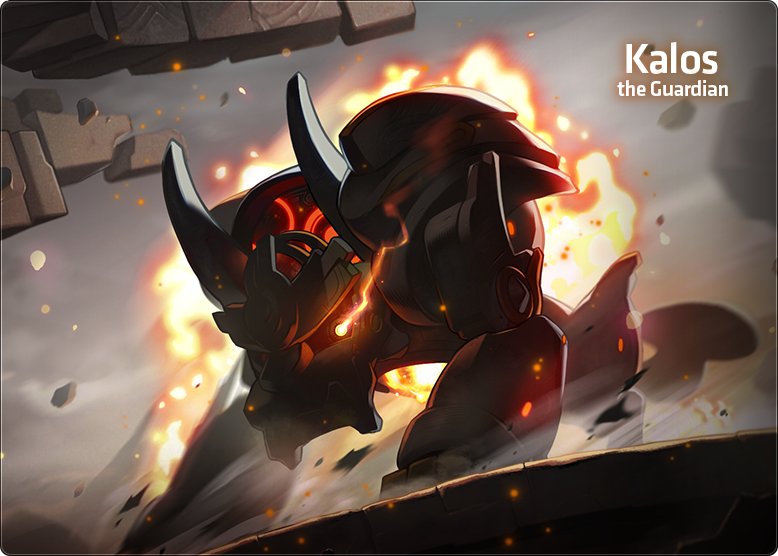
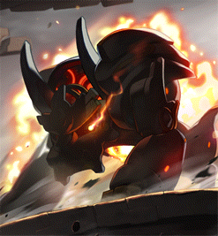

Checked-in boss knowledge
Gatekeeper Kalos
T-Boy keeps switching on four weapons and the party shoots them off with Will of Kalos; Phase 2 adds a safe-dome test every 25% of HP.
Union Champion · Rank SSS trial
A Rank SS champion
- Solo
- 20-minute limit
- Practice Mode clears count
- B · Lotus
- S · Black Mage
- SS · Chosen Seren
- SSS · Gatekeeper Kalos
- Boss level
- 260entry 260
- Party
- Solo
- SSS insignia +5% Ignore Enemy DEF for every character. Normal Kalos solo in Champion Mode (Champion Evaluation Match).
- Practice Mode Clears count and add Hamcelot's Protection: 25% less damage taken.
- Hamcelot's Trial Final Damage −30% in this Champion trial.
- Many stop at SS Community view: Normal Kalos solo needs more spec than Hard Serene, for only +5% IED.
Overview
Four weapons
- Eye of Restraintleft · stun laser
- Bombardment Fightertop · drone beam
- Odium spherebouncing ball
- Eye of the Abyssright · dark arrows
Shoot the Eyes directly; hit the drone and ball through the generator above or below them as they pass.
Weapon activation
- Easy
- every 80 s
- Normal
- every 70 s
- Chaos and Extreme
- every 60 s
- Watcher's Roar
- ↓ +1 weapon
MapleSEA v251 slowed Easy and Normal from 60 s.
Shots per party member
- Each Eye
- 2 · Chaos/Extreme 3
- Drone
- 1 · Chaos/Extreme 2
- Ball
- Easy 1 · all others 2
A weapon's colour counts its shots left: red, then purple, then dark blue.
Phase 2 segments
- 2-1 · 100–75%
- 2-2 · 75–50%
- 2-3 · 50–25%
- 2-4 · curses
Each segment ends in a dome test; segment 2-4 adds a curse every minute.
- Four weapons Eye of Restraint (left, stun laser), Eye of the Abyss (right, dark arrows), Bombardment Fighter (top drone) and the bouncing Odium sphere.
- Activation One more switches on per timer (set by difficulty) and per Watcher's Roar.
- Will of Kalos NPC/Gather key to aim, again to fire; refills about every 10 s.
- Shots needed Scale with party size and difficulty.
- All four on All four still on when the next timer ends ejects the party; freeing any one resets it.
Danger
- Eye of Restraint Stun laser that chains into his attacks, even in dome tests. Freeing it cancels the shot (SEA v251).
- Empowered weapons Chaos/Extreme: three or more active empower all; empowered arrows kill in two hits.
- Watcher's Roar One-shot every ~2.5 min that adds a weapon; binds delay it by their length.
- Breath and dive Phase 2 Laser Breath kills through Heaven's Door, one floor up too; the dive picks a random player.
- Curses below 25% Segment 2-4: a curse every minute; two stacks raise damage taken, a third kills. Harvest the armguard to clear.
Tips
- Caller and timer One watches Kalos after each teleport; one times Roar, breath, dive and next system.
- Number the generators Call 1-5 for drone and ball shots so nobody doubles up.
- Ball timing Fire when it is halfway to its generator; the barrier lasts about 2 s.
- Hero's Will Use it before the left tower's laser lands.
- Authentic Symbol Hotel Arcs Lv 11: +20% damage to Kalos (SEA v251).
Phases
Phase 2 dome test every 25%
- Dome tests Each 25% segment ends in a three-dome test. A death heals Kalos 5%; success gives a 15 s groggy, timers paused.
- Left tower in tests Eye of Restraint keeps firing during dome tests; never start one while it is active.
- Threshold control Stop just above each 25% mark (parties use about 0.3-1%); phase once Left is off and fewer than three weapons are up.
- Curses in 2-4 Below 25% a curse lands every minute: two stacks raise damage taken, a third kills. Harvest the armguard to clear.
- Breath and dive Laser Breath kills through Heaven's Door and reaches one floor up; the dive lands on a random player.
Strategies
Clear left first
Low risk · Low damage requirementEasy and Normal, learning parties or low shot accuracy
- Cleanse Eye of Restraint first, then usually Eye of the Abyss; whether the ball or the drone comes next is the caller's choice.
- Shoot from an angle you have practised and check that each shot connects.
- Never start a dome test while the Left tower is active.
- Hold a charged shot when the next system is about 10 s away, instead of firing at nothing.
Payoff Fewest stun-chain deaths and safe dome tests
Prepare weapons
Medium risk · High damage requirementChaos and Extreme, where three active weapons empower all of them; an advanced party convention that needs a caller
- Shoot one weapon (often the ball or drone) down to its last colour and leave it there as a reserve, with one named player owning it.
- When a third weapon switches on, the owner calls and finishes the reserve at once to drop back to two; never sit on three empowered weapons.
- Leave a nearly finished weapon up until the next activation, so you do not re-roll a worse one.
- Some routes put the Right tower ahead of Left while arrows are empowered; agree that exception in advance, and keep shooting during tests and bursts.
Payoff Keeps the active count under three at tests and bursts
Hold HP, then burst
Medium risk · High damage requirementAny difficulty; the main party damage plan, with an entry sequence and stop margin each party calibrates
- Phase 1 - group on one side, wait for his first teleport so everyone has loaded, then bind and burst.
- Phase 2 start - group in the middle so his opening dive lands there, step out, then bind and burst.
- Stop just above each 25% threshold (about 0.3-1% is a party habit, not an official margin; allow for lingering damage) and phase once Left is off and fewer than three weapons are up, before the next Roar adds a weapon.
- Burst again in the 15 s groggy after each dome test, and burst through segment 2-4 quickly.
Payoff One long burst per segment and fewer weapon cycles
Notes
- Destiny Resolve per clear Normal 10 · Chaos 70 · Extreme 400, split among everyone who entered.
- HP estimates Overdrive HP is estimated from the published KMS reductions.
Sources
Research checked .
- MapleSEA v251 Content Updates Part 2MapleStorySEA · official
- MapleSEA v251 Content UpdatesMapleStorySEA · official
- MapleSEA v244 Patch NotesMapleStorySEA · official
- MapleSEA v227 NEW AGE Patch NotesMapleStorySEA · official
- KMS 1.2.416 OVERDRIVE patch notesNexon Korea · official
- Comprehensive Kalos Boss Guide 2024Duky · guide
- MapleTools - KalosMapleTools · tool
- MapleStory Wiki - Kalos/MonsterMapleStory Wiki contributors · wiki
- MapleSEA v243 NEXT II patch notes (Union Champion)Nexon SEA · official
- KMS official guide - Union ChampionNexon Korea · official
- MapleStory Wiki - Destiny WeaponMapleStory Wiki contributors · wiki